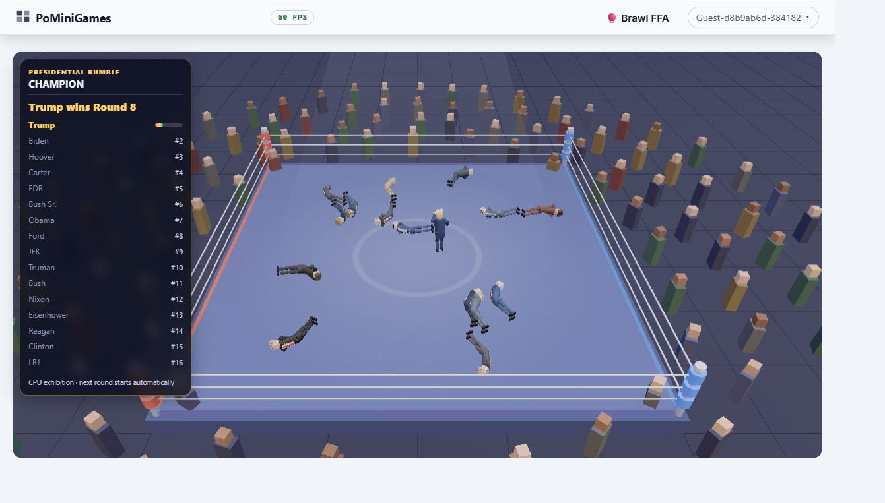
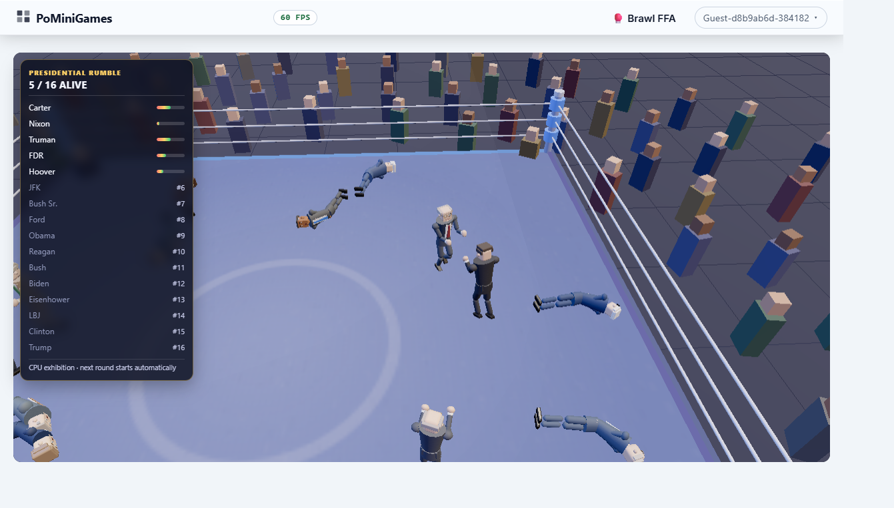

Before: fixed overhead overview

The camera stayed wide regardless of who was about to be knocked out.
After: follow the fighter in danger

Three alternating angles follow the lowest-health survivor, linger on a knockout, then cover the next endangered fighter.